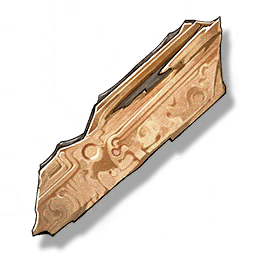

Wood Grain Fragment
Valuables

Special drops from the Huanglong region, which can be used to exchange for various items in the Pioneer Association.
The ancient buildings in the Huanglong region often used wooden structures, but wood cannot meet the strength requirements of modern buildings. Since a long time ago, Huanglong began to develop and use a variety of building materials to simulate wood grain, so that the buildings are both ancient and durable.
Wood grain fragments can be collected everywhere in Huanglong. They are of different shapes and materials, and may have come from the beams and eaves of houses, or from shops, barracks, and academies... It is not easy to figure out the story behind this, but the Pioneer Association is tireless in this.